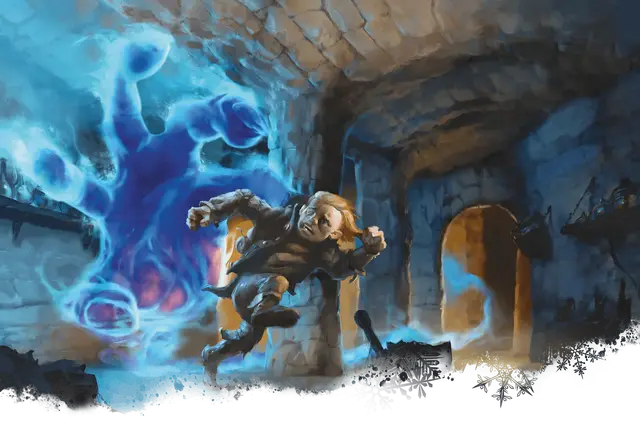

Оживлённая длань Бигби
Living Bigby's Hand
Большой Конструкт, без мировоззрения

Класс Доспеха 20 (природный доспех)
Хиты 52 (5к10 + 25)
Скорость 0 футов, летая 60 футов (парит)
| мод | спас | ||
|---|---|---|---|
| СИЛ | 26 | +8 | +8 |
| ЛОВ | 10 | +0 | +2 |
| ТЕЛ | 20 | +5 | +5 |
| мод | спас | ||
|---|---|---|---|
| ИНТ | 1 | −5 | −5 |
| МДР | 10 | +0 | +2 |
| ХАР | 1 | −5 | −5 |
Навыки Восприятие +2, Скрытность +2
Иммунитет к урону яд
Иммунитет к состояниям бессознательность, глухота, испуг, истощение, окаменение, ослепление, отравление, очарование, паралич
Чувства тёмное зрение 60 футов, пассивное Восприятие 12
Опасность 4 (1100 опыта)
Бонус мастерства +2
Особенности
Сопротивление магии. Живое заклинание совершает с преимуществом спасброски от заклинаний и прочих магических эффектов.
Необычная природа. Живое заклинание не нуждается в воздухе, еде, питье и сне.
Действия
Силовой кулак. Рукопашная атака заклинанием: +10 к попаданию, досягаемость 5 фт., одна цель. Попадание: 26 (4к8 + 8) урона силовым полем и если цель размером меньше Большого живое заклинание может передвинуть её до 5 футов и передвинуться вместе с ней не провоцируя атаки.
Сжимающая длань. Живое заклинание пытается схватить существо с размером Огромное или меньше, находящееся в пределах 5 футов от неё. Цель должна преуспеть в спасброске Ловкости Сл 15, иначе станет схваченной (Сл освобождения 15). Пока захват не окончен, цель получает 15 (2к6 + 8) дробящего урона в начале каждого своего хода. Живое заклинание может захватить только одно существо за раз и не может использовать «Силовой кулак» пока не окончится захват.
Описание
Области дикой магии и места, разрушенные могущественными сверхъестественными силами иногда приводят к тому, что эффекты заклинаний становятся живыми сущностями. Эти так называемые «живые заклинания» населяют места, где они когда-то были созданы, подпитываясь наполняющей эти места магической энергией.
Живая длань Бигби — это Большая парящая рука светящейся полупрозрачной энергии. Она часто используется в качестве стража и атакует всех на своем пути, оставаясь в то время верной своему заклинателю.